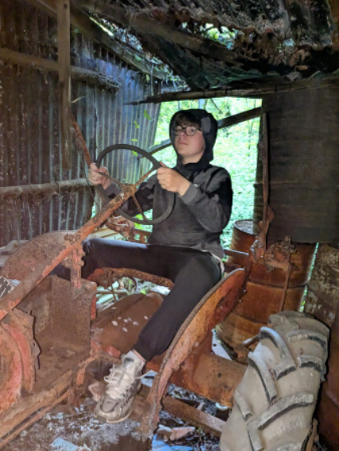
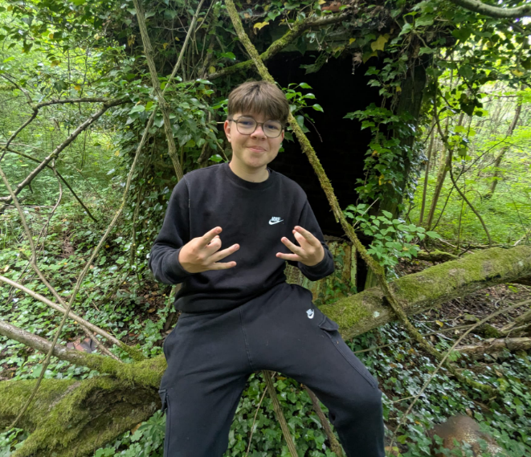

URBEX
Annet-sur-Marne
URBEX BUNKER
LE TRACTEUR

Claye-Souilly
LIEU SECRET
À 0 km de Claye-Souilly (localisation exacte)

En Voiture
MINE
À environ 15 km de Claye-Souilly
USINE
À environ 25 km de Claye-Souilly
FERME
À environ 12 km de Claye-Souilly